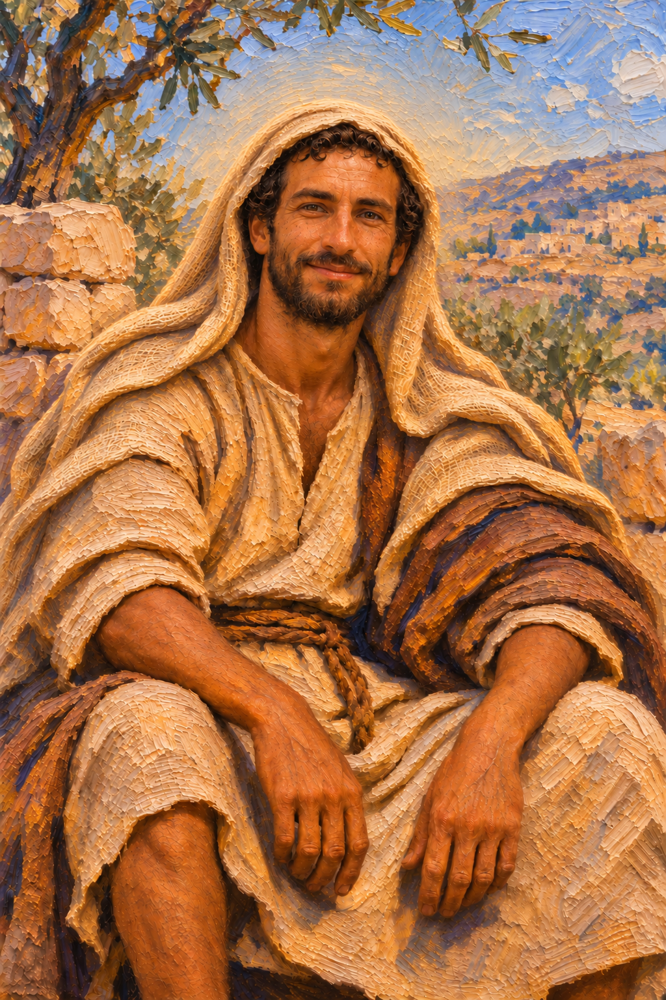
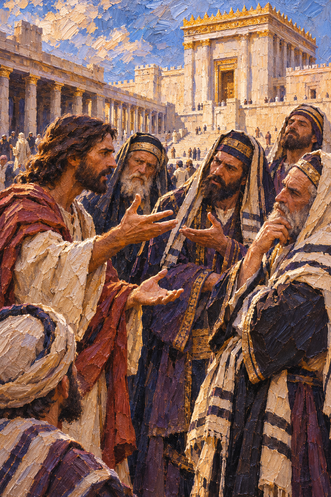
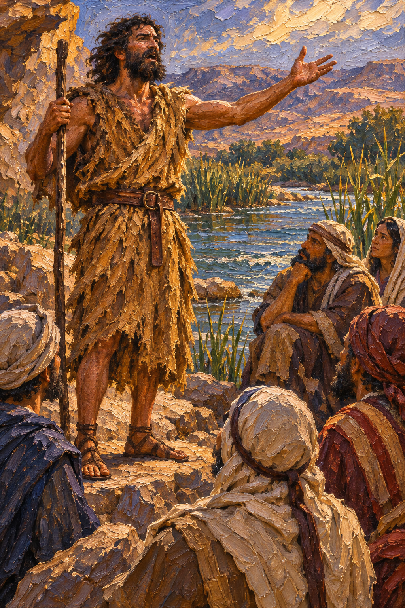
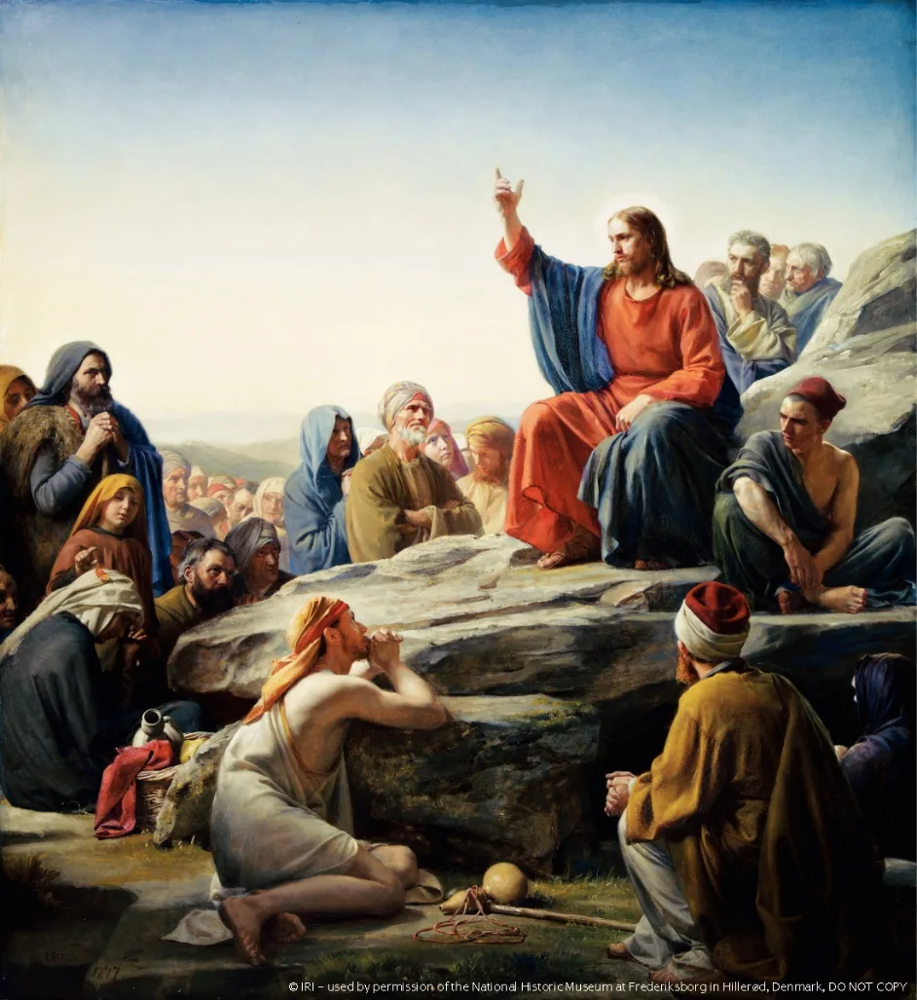
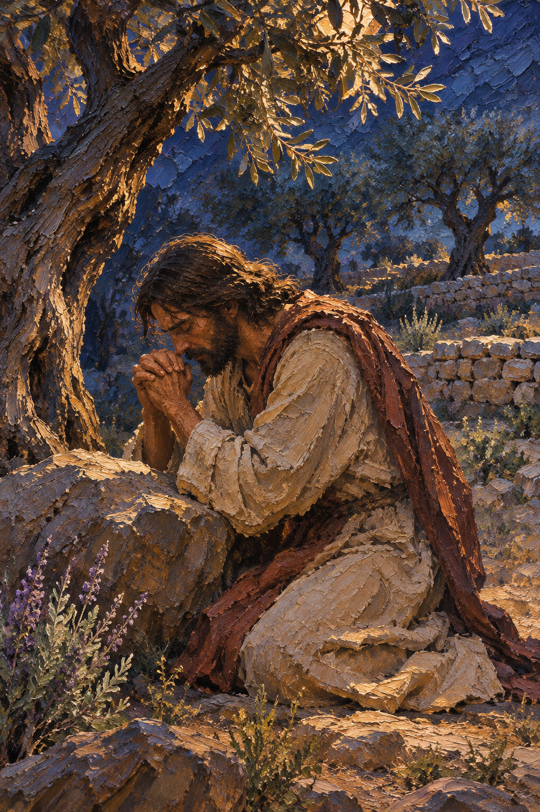
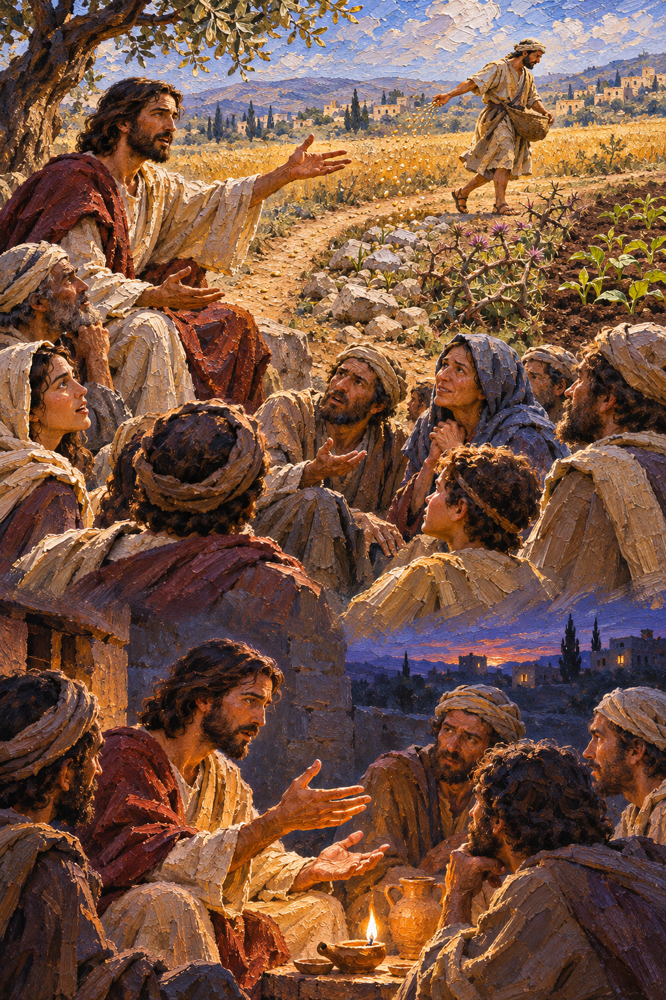
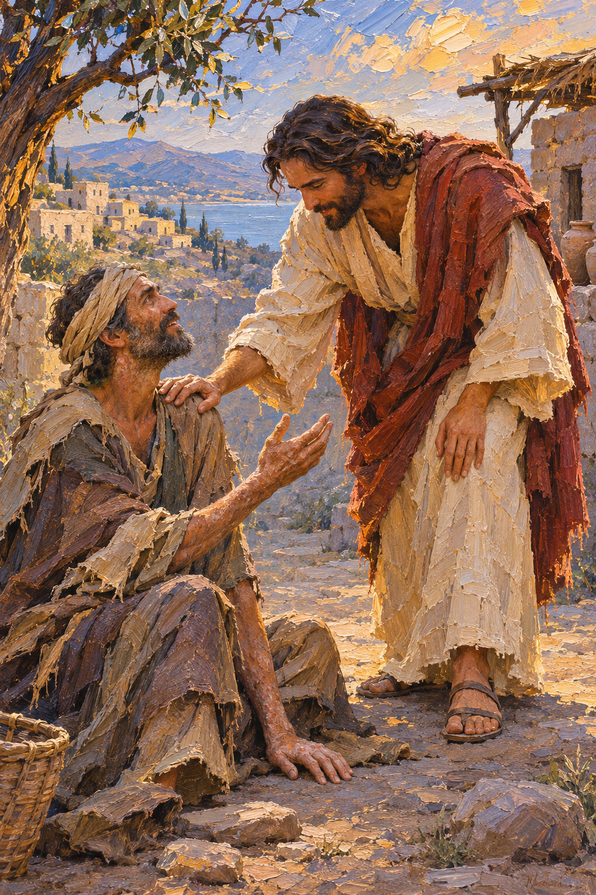
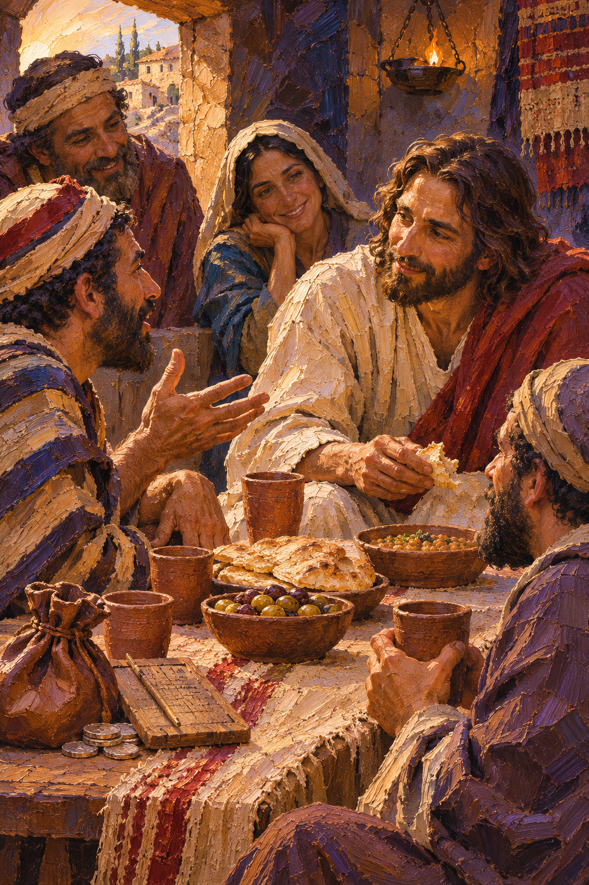
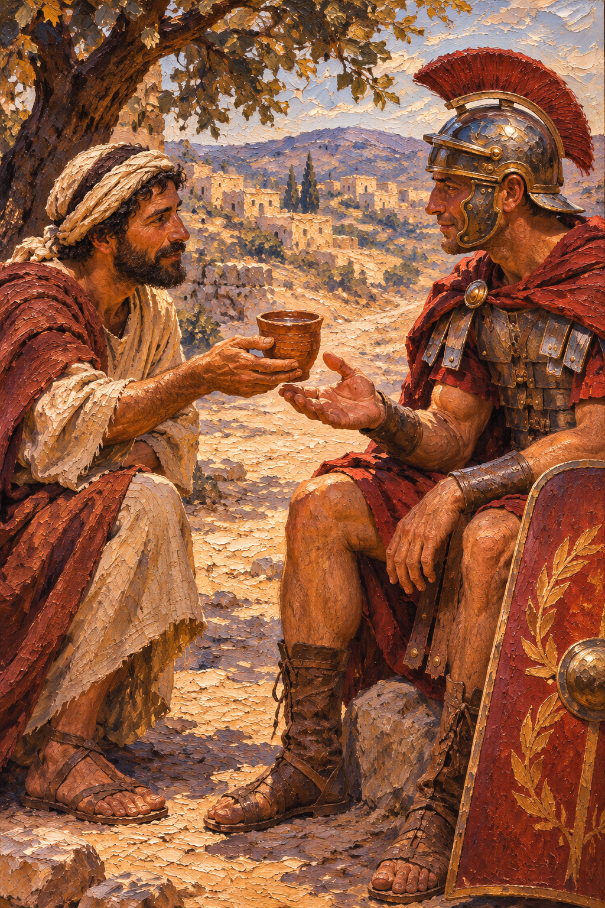
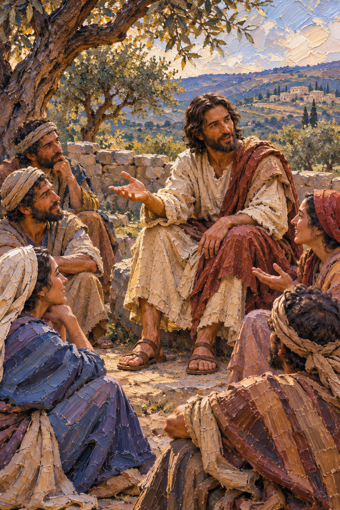

DAY 1 · CLASSROOM LECTURE 1 OF 6
The historical Jesus, Jewish context, kingdom, Sermon on the Mount, antitheses, parables
Greek Christos translates Hebrew messiah: “the Anointed One.”
A nickname first used at Antioch for Jesus’ followers (Acts 11:26).
The religion based on Jesus Christ’s life and teaching: a “daughter religion” of Judaism.

Jesus of Nazareth was Jewish; Christians share Israel’s scriptures and one God, but claim that Jesus is the Messiah.
Hebrew mashiach, “anointed one.” Israel’s kings and priests were anointed with oil. The Greek translation is Christos, which became “Christ.”
Studying the Historical Jesus
A Jewish historian mentions James as the brother of Jesus called Christ. A longer passage about Jesus contains disputed wording and later Christian alterations.
A Roman historian reports that Christus was executed under Pontius Pilate during Tiberius’s reign.
A Roman governor describes Christians singing hymns to Christ. His letter helps reconstruct early Christian worship.
Inscriptions, coins, buildings, and the Dead Sea Scrolls illuminate Roman rule and the Jewish world in which Jesus taught.
Ask when each source was written, what information it preserves, and how its author obtained it.
REL 210 · Chapter 11
Jesus belonged to the religious world of first-century Galilee and Judaea; he did not begin with an already separate Christian religion.
Torah, Sabbath, the Temple, prophetic hope, and varied interpretations of God's covenant frame his teaching.
Disagreements about law and purity were part of vigorous Jewish religious conversation.
Roman power and local elites shaped daily life, taxation, and hopes for deliverance.

Avoid the stereotype that Judaism was merely legalistic and Jesus alone introduced compassion.

Follow me and I will make you fish for people.
Mark 1:17 (NRSV)
Jesus and His Message
The organizing theme of Jesus’s preaching
Not simply a place: God’s active reign over human life and creation.
Healings, forgiveness, restored community, and changed lives signal its arrival.
Jesus also points toward a future fulfillment of justice, peace, and renewal.
Christian hope lives in the tension between what God has begun and what has not yet been completed.

Carl Bloch, The Sermon on the Mount (1877), public domain; image from the original deck
Matthew 5 | Sermon on the Mount: The Beatitudes · The Church of Jesus Christ of Latter-day Saints (Bible Videos) · Open on YouTube ↗
Blessed are the poor in spirit, for theirs is the kingdom of heaven.
Blessed are the meek, for they will inherit the earth.
Blessed are the peacemakers, for they will be called children of God.
Matthew 5:3, 5, 9 (NRSV)
Their character and privileges
Their responsibilities: “You are the salt of the earth… the light of the world”
The Beatitudes emphasize qualities that often contradict worldly values, such as power, wealth, and self-sufficiency.
They outline the attitudes and behaviors expected of those who belong to God’s Kingdom.
They call believers to embody these virtues: reliance on God, compassionate action, and perseverance through trials.
“You have heard that it was said… But I say to you…”
“if you are angry with a brother or sister, you will be liable to judgment” (5:22)
“everyone who looks at a woman with lust has already committed adultery with her in his heart” (5:28)
“Love your enemies and pray for those who persecute you” (5:44)
Beatitudes: “Blessed are…” → Antitheses: the Law reaches inside, to thoughts and emotions.
Do not think that I have come to abolish the law or the prophets; I have come not to abolish but to fulfill.
Matthew 5:17 (NRSV)
Transformation of the believer.
Transformation of the Law: fulfillment through inward motives as well as outward action.
Fulfillment of the Law (Matt. 5:17); inner transformation (outward action to inward motivations); a call to a higher moral and spiritual standard.
REL 210 · Chapter 11
The prayer begins with reverence for God and the holiness of God's name.
It asks for God's reign and will to be realized on earth.
Daily needs, forgiveness, and reconciliation belong together.
Followers seek strength amid temptation and evil.

Matthew 6:9–13: worship, ethics, and the coming kingdom are connected in one prayer.
he did not speak to them except in parables, but he explained everything in private to his disciples.
Mark 4:34 (NRSV)

A son wastes his inheritance and comes home expecting to be a servant. Watch what the father does.
Luke 15 | Parables of Jesus: The Prodigal Son · The Church of Jesus Christ of Latter-day Saints (Bible Videos) · Open on YouTube ↗
“You shall love the Lord your God with all your heart, and with all your soul, and with all your mind.” … And a second is like it: “You shall love your neighbor as yourself.”
Matthew 22:37–39 (NRSV), quoting Deut. 6:5 and Lev. 19:18
Understanding Agape Love · Seek Learning · Open on YouTube ↗
Jesus and His Message
The kingdom overturns ordinary boundaries of honor and belonging



By sharing meals with people others excluded, Jesus made God’s mercy and welcome visible.
REL 210 · Chapter 11
The reign of God challenges ordinary measures of success, power, and belonging.
Actions, motives, mercy, enemy-love, and faithful prayer.
Parables require listeners to interpret surprising reversals.
Jesus summons followers and welcomes people considered outsiders.

Bridge to Lecture 2: the Gospels portray Jesus performing deeds that match these teachings.
LECTURE 1 · PIERIAN SPRING
The 35-minute classroom lecture ends here. All following slides are assigned independent study for Lecture 1: Jesus: Life and Teachings.
Independent Study
How does the scene mark the beginning of Jesus’s public ministry?
Jesus Is Baptized by John · 2:55 · The Church of Jesus Christ of Latter-day Saints · Open on YouTube ↗
Matthew 5 | Sermon on the Mount: The Higher Law · The Church of Jesus Christ of Latter-day Saints (Bible Videos) · Open on YouTube ↗
PIERIAN SPRING · REQUIRED INDEPENDENT STUDY
Matthew 6:1–18 warns against making charitable giving, prayer, and fasting into performances for recognition.
The petitions for God's reign, daily bread, forgiveness, and deliverance sit inside the Sermon on the Mount.
Jesus' concern for sincerity draws on Jewish prophetic and wisdom traditions; it is not an attack on Jewish prayer.
Matthew 6:9–13 and Luke 11:2–4 preserve related but not identical versions of the prayer.
Deep study: how does inward devotion connect to Jesus' public ethics?
PIERIAN SPRING · REQUIRED INDEPENDENT STUDY
A surprising rescuer becomes the model for acting as a neighbor.
An unexpected reception of a returning son highlights compassion and exposes resentment.
Each story challenges assumptions about who counts as righteous, deserving, or socially important.
How do these stories invite action rather than give a neat dictionary definition of God's kingdom?
In each parable, identify the audience, the reversal, and the ethical demand.
PIERIAN SPRING · REQUIRED INDEPENDENT STUDY
How do ethical practices in Matthew 5–6 express the announced Kingdom of God?
What does Jesus mean by fulfilling rather than abolishing the Law (Matthew 5:17)?
Compare how the Good Samaritan and Prodigal Son challenge their audiences.
How does John 13:34–35 express the expected behavior of Jesus' followers?
Study check: explain the examples, not only the terminology. Return to earlier slides when needed.
→ / Space: Next slide
← : Previous slide
Tab / Shift+Tab: Move between pop-up terms and links
Enter / Space on a dotted term: Open its pop-up
S: Speaker notes
F: Fullscreen
O: Overview
ESC: Close an open pop-up (otherwise toggles the overview)